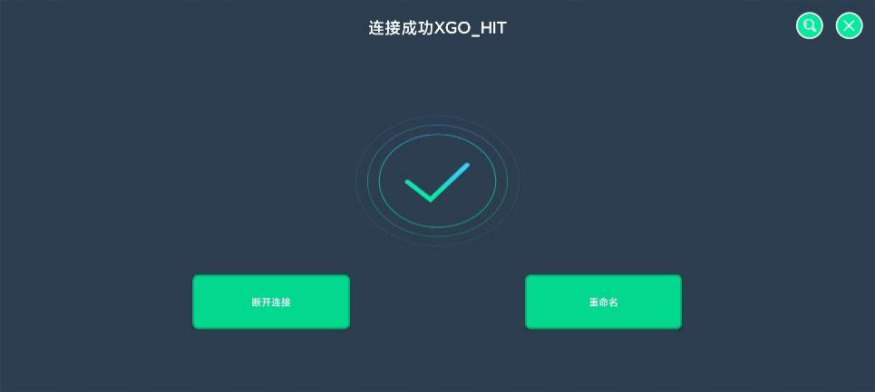
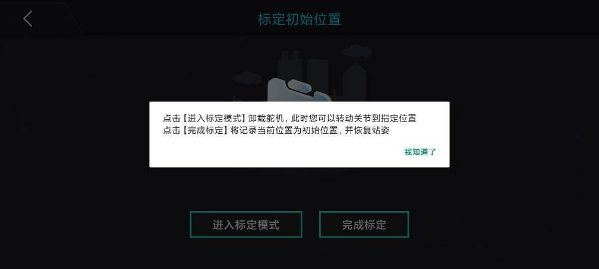
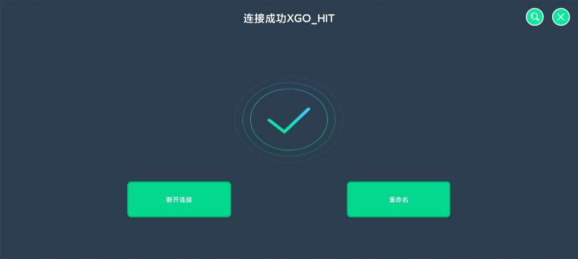
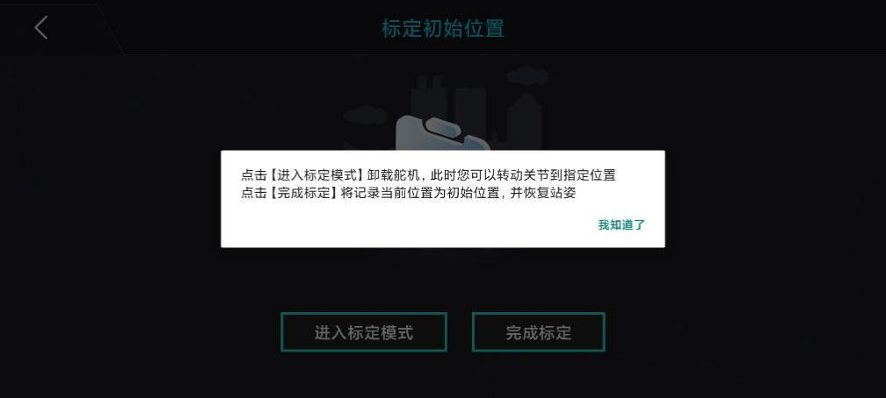
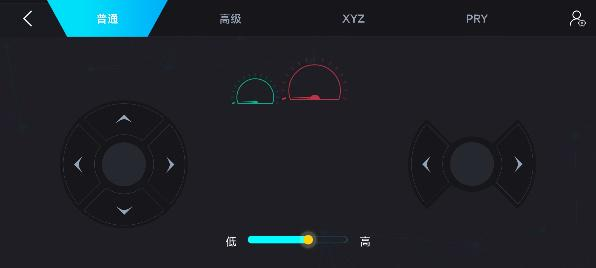
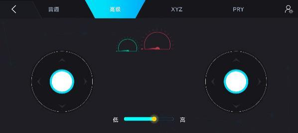
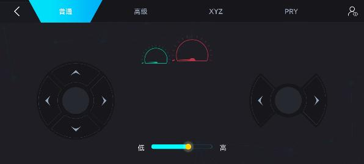
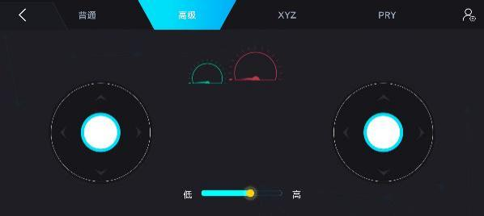
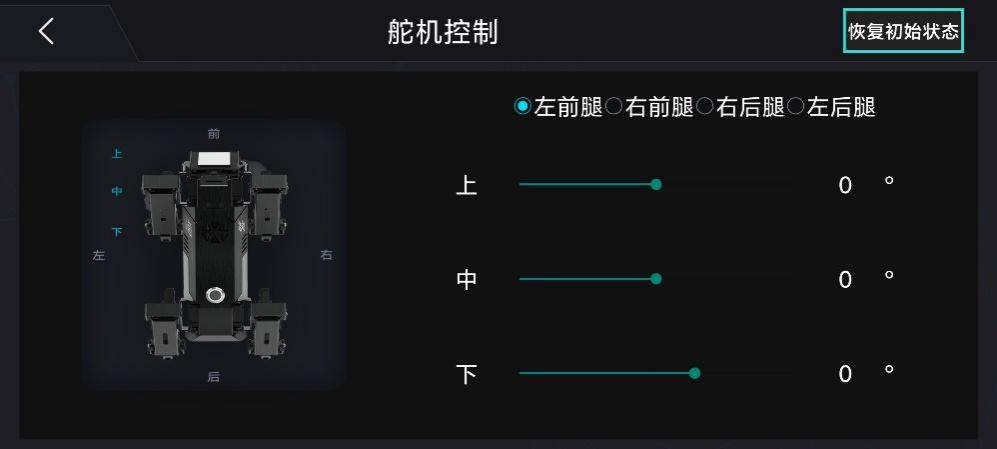

1.概述
XGO移动端是陆吾智能所开发的机器人控制器，软件通过手机蓝牙和机器人连接，实现数据的双向通讯，为用户提供方便简洁的遥控界面和其他多种多样的控制方式，极大的方便了用户对机器人的控制。 软件无需登录，安装即可使用，能够自动搜索和匹配机器人设备，识别机器人种类。 软件总体上共分为四个部分：主页面、蓝牙界面、设置界面和控制界面。主页面上提供了进入其他界面的入口；蓝牙界面提供和机器人蓝牙连接的交互功能；设置界面提供更改APP相关设置的选项；控制界面提供多种遥控功能。 软件适用于Android 4.4以上（含）系统的手机使用。 ### 2.模块详解 #### 2.1.主页面 点击软件图标 ，进入APP。  首先用户将看到欢迎界面如上图，该界面背景图片是陆吾智能mini版本的四足机器人，另外还显示了当前软件的版本号。欢迎界面持续显示3秒，然后进入主页面。
首先用户将看到欢迎界面如上图，该界面背景图片是陆吾智能mini版本的四足机器人，另外还显示了当前软件的版本号。欢迎界面持续显示3秒，然后进入主页面。  主页面提供了其他界面的入口，如上图所示，分别介绍如下： 1）蓝牙：若此时没有连接机器人设备，点击蓝牙按钮将进入蓝牙连接界面，可以搜索和连接机器人设备。 注意：此处需要用到手机蓝牙，第一次打开时用户需要授权本APP相应的权限，否则将不能正常使用蓝牙功能。进入蓝牙连接界面时，如果手机蓝牙未打开，将会提示用户打开蓝牙，否则将不能正常使用蓝牙功能。 蓝牙连接界面如下图所示。摇晃手机，APP将自动与最近的机器人设备相连。
主页面提供了其他界面的入口，如上图所示，分别介绍如下： 1）蓝牙：若此时没有连接机器人设备，点击蓝牙按钮将进入蓝牙连接界面，可以搜索和连接机器人设备。 注意：此处需要用到手机蓝牙，第一次打开时用户需要授权本APP相应的权限，否则将不能正常使用蓝牙功能。进入蓝牙连接界面时，如果手机蓝牙未打开，将会提示用户打开蓝牙，否则将不能正常使用蓝牙功能。 蓝牙连接界面如下图所示。摇晃手机，APP将自动与最近的机器人设备相连。  若附近有多个设备或用户想通过机器人名称连接设备，可点击搜索按钮，在经过一段时间的搜索后，将会列出附近所有可用设备，如下图所示，点击某一设备名即可连接该设备。
若附近有多个设备或用户想通过机器人名称连接设备，可点击搜索按钮，在经过一段时间的搜索后，将会列出附近所有可用设备，如下图所示，点击某一设备名即可连接该设备。  若此时已经连接机器人设备，点击蓝牙按钮将弹出如下图所示窗口，用户可断开连接。  2）标定：点击标定按钮进入标定界面，用以重新设置机器人的初始位置。仔细阅读后点击我知道了，点击进入标定模式按钮，此时机器人各关节舵机将不再输出力矩，外力可转动，用户需将机器人摆放为指定姿势（参见《二次开发手册》），然后点击完成标定按钮，机器人将记录当前位置作为初始位置并自动完成重启。 注意：标定按钮在主界面中默认是隐藏的，用户可以在设置界面中取消隐藏，具体操作请参阅设置一节。该操作属于专业用户操作，操作不可逆，请认真阅读说明后操作。  3）设置：点击设置按钮进入设置界面，如下图所示，用户可以设置“退出APP是否自动关闭蓝牙”，以及设置语言（目前仅支持中、英文）
若此时已经连接机器人设备，点击蓝牙按钮将弹出如下图所示窗口，用户可断开连接。  2）标定：点击标定按钮进入标定界面，用以重新设置机器人的初始位置。仔细阅读后点击我知道了，点击进入标定模式按钮，此时机器人各关节舵机将不再输出力矩，外力可转动，用户需将机器人摆放为指定姿势（参见《二次开发手册》），然后点击完成标定按钮，机器人将记录当前位置作为初始位置并自动完成重启。 注意：标定按钮在主界面中默认是隐藏的，用户可以在设置界面中取消隐藏，具体操作请参阅设置一节。该操作属于专业用户操作，操作不可逆，请认真阅读说明后操作。  3）设置：点击设置按钮进入设置界面，如下图所示，用户可以设置“退出APP是否自动关闭蓝牙”，以及设置语言（目前仅支持中、英文）  注意：以开发者身份运行此项目选中是选项时，主界面的标定按钮取消隐藏。 4）关于：点击关于按钮进入关于界面，查看更多关于本产品的信息。
注意：以开发者身份运行此项目选中是选项时，主界面的标定按钮取消隐藏。 4）关于：点击关于按钮进入关于界面，查看更多关于本产品的信息。  5）控制界面：点击表演模式、整机控制、单腿控制、舵机控制按钮分别进入不同控制界面，在主页面中左右滑动切换不同模式，可对已经连接的机器人设备进行实时控制，具体请参阅下一节。 #### 2.2.控制界面 控制界面使用户能够按照不同方式直接地控制机器人，相当于用户拥有了多个遥控器，分别介绍如下：   1）整机控制：整机控制提供给用户四种操作方式，普通用户通过按钮控制机器人前后左右运动及旋转；进阶用户通过摇杆控制机器人前后左右运动及旋转；XYZ允许用户通过摇杆控制机器人身体三维平移；PRY允许用户通过摇杆控制机器人身体三维旋转。此外通过拖动下方滑杆还可以控制机器人身高，通过点击右上角按钮更改运动模式、开闭陀螺仪等。蓝色表盘显示当前设备电量，未连接设备时电量为0；红色表盘显示当前速度。上两图给出了普通和高级的界面。
5）控制界面：点击表演模式、整机控制、单腿控制、舵机控制按钮分别进入不同控制界面，在主页面中左右滑动切换不同模式，可对已经连接的机器人设备进行实时控制，具体请参阅下一节。 #### 2.2.控制界面 控制界面使用户能够按照不同方式直接地控制机器人，相当于用户拥有了多个遥控器，分别介绍如下：   1）整机控制：整机控制提供给用户四种操作方式，普通用户通过按钮控制机器人前后左右运动及旋转；进阶用户通过摇杆控制机器人前后左右运动及旋转；XYZ允许用户通过摇杆控制机器人身体三维平移；PRY允许用户通过摇杆控制机器人身体三维旋转。此外通过拖动下方滑杆还可以控制机器人身高，通过点击右上角按钮更改运动模式、开闭陀螺仪等。蓝色表盘显示当前设备电量，未连接设备时电量为0；红色表盘显示当前速度。上两图给出了普通和高级的界面。
 2）表演模式：用户通过点击各按钮让机器人执行相应的动作，点击轮播机器人将重复执行所有动作，点击Reset机器人将恢复初始状态。
2）表演模式：用户通过点击各按钮让机器人执行相应的动作，点击轮播机器人将重复执行所有动作，点击Reset机器人将恢复初始状态。
3）单腿控制：该界面允许用户分别直接控制机器人的某一条腿，通过选择要控制的腿，然后拖动滑杆，即可改变该条腿的三维坐标系空间位置。
 4）舵机控制：该界面允许用户分别直接控制机器人的某一个舵机，通过选择要控制的舵机位置，然后拖动滑杆，即可改变相应舵机的角度。
3.功能详解
使用遥控器控制机器人前进功能示例  1）进入APP，进入主页面后点击蓝牙按钮，如上图所示，点击允许打开蓝牙，进入蓝牙连接界面，摇一摇手机，APP将自动连接机器人设备并跳转至主界面。 2）连接成功后，点击整机控制按钮进入遥控界面，以普通控制方式为例，点击左侧向上按键，将看到机器人向前运动，松开按键机器人停止运动。 3）点击左上角返回按钮返回主界面，点击蓝牙按钮断开连接。连续两次点击返回键退出APP。
1）进入APP，进入主页面后点击蓝牙按钮，如上图所示，点击允许打开蓝牙，进入蓝牙连接界面，摇一摇手机，APP将自动连接机器人设备并跳转至主界面。 2）连接成功后，点击整机控制按钮进入遥控界面，以普通控制方式为例，点击左侧向上按键，将看到机器人向前运动，松开按键机器人停止运动。 3）点击左上角返回按钮返回主界面，点击蓝牙按钮断开连接。连续两次点击返回键退出APP。